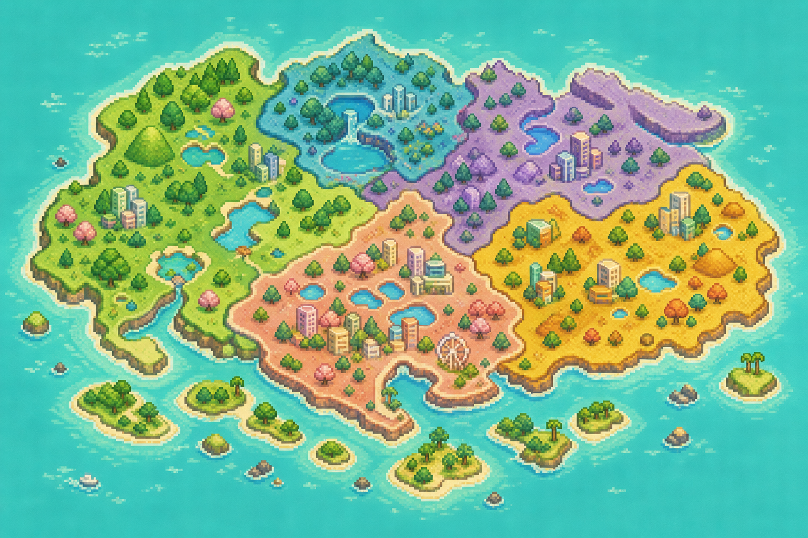

4 / 73BREEDS UNLOCKED
INTERESTING FACT OF THE DAY
Today’s cat curiosity
Cats use their whiskers to sense nearby objects and openings, even in low light.
FIELD LOG // 02 SEP 2026
Every cat
has a story.
Spot a neighbourhood cat, snap a photo, and stash its pixel portrait in your personal Singapore field guide.
Privacy by designOnly a broad Singapore region is saved — never an exact pin or address.
NEW SIGHTING READY+
6CATS STASHED
4 / 6REGIONS EXPLORED
CATDEX COMPLETION5%
YOUR COLLECTION
The Catdex
One portrait, one memory, one more cat discovered.
No cats match that search. Try another name or region.
PRIVACY-SAFE EXPLORATION
Singapore sightings
Every marker represents an entire region, never a cat’s precise location.
DISCOVERED UNEXPLORED

WEST2 CATS
NORTH1 CAT
CENTRAL2 CATS
EAST1 CAT
NORTH-EASTUNEXPLORED
SOUTHUNEXPLORED
Why only broad regions? Exact locations can put community cats at risk. CATDEX discards precise coordinates and keeps only one of six general areas.
CAT TRAILS // MINI ADVENTURE
Explore Singapore together
Pick a companion from your Catdex and wander through a little Singapore neighbourhood. Six cat-friendly discoveries are waiting along the trail.
AREACENTRAL GREEN
DISCOVERED0 / 6
STEPS000